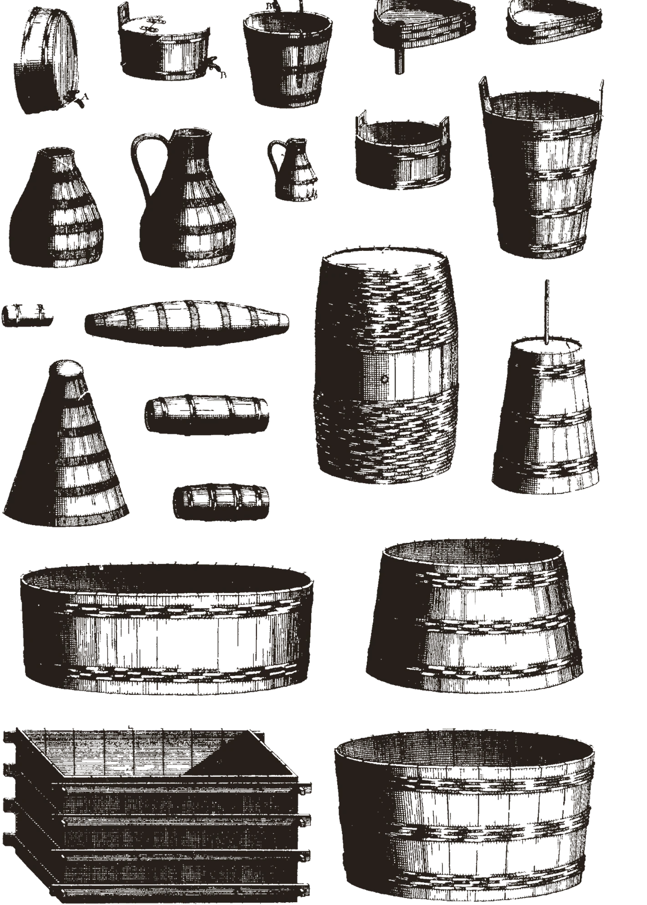
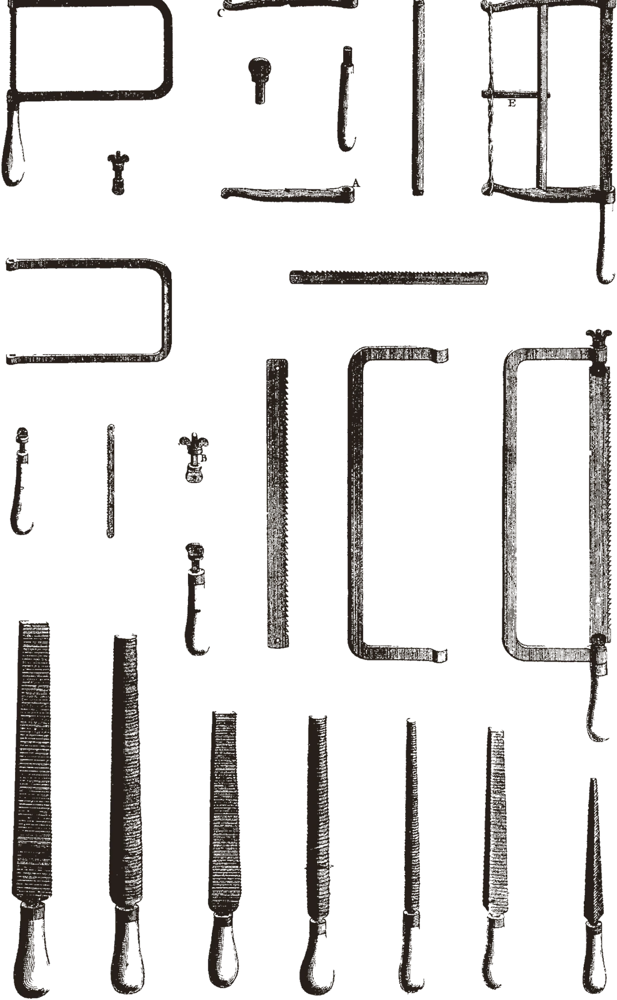
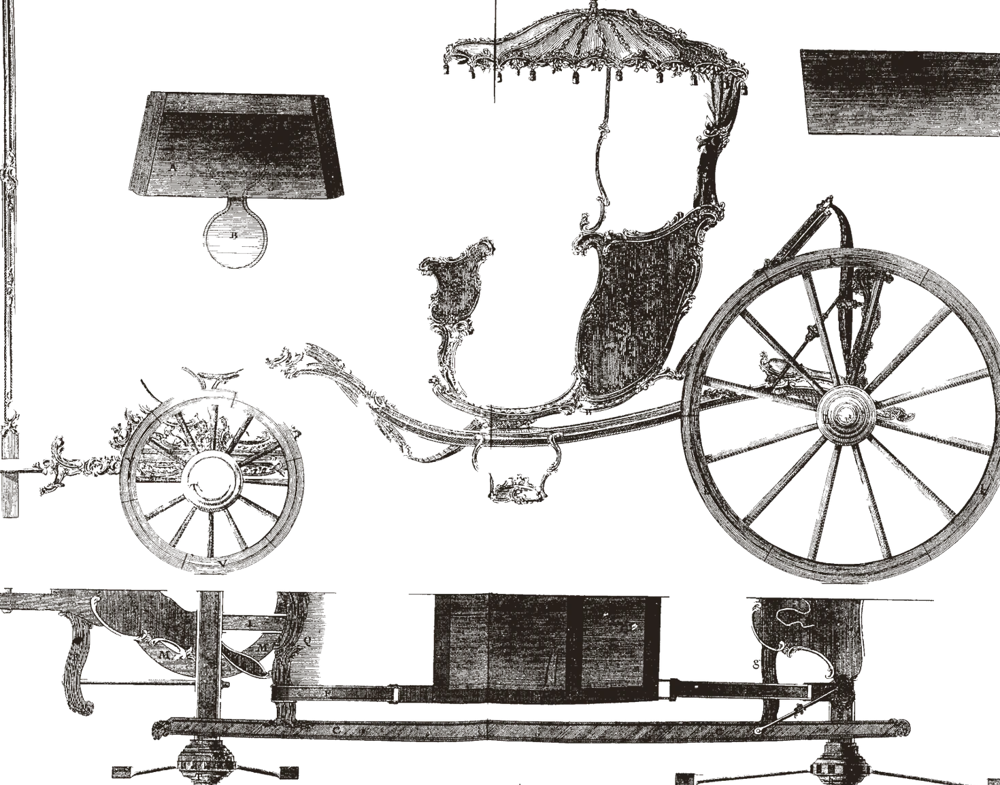
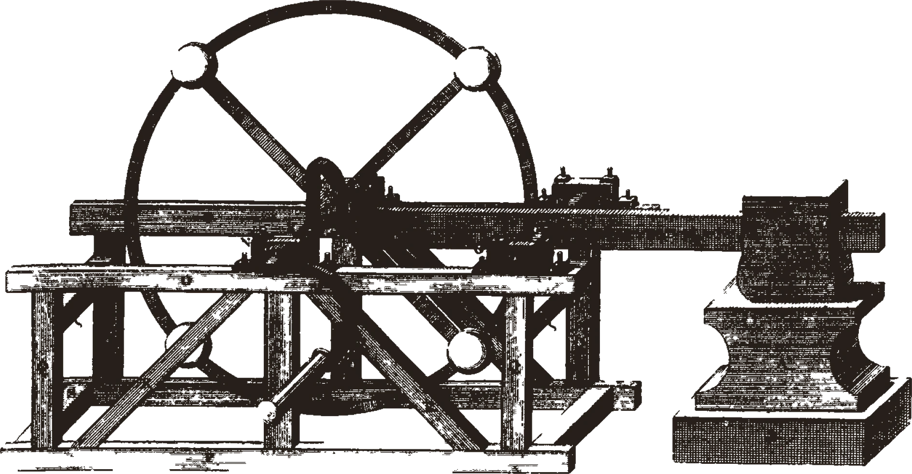
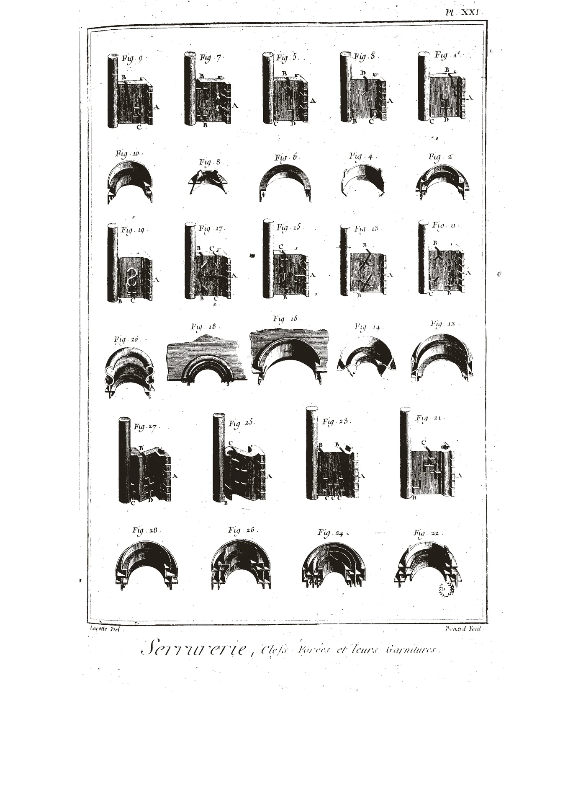
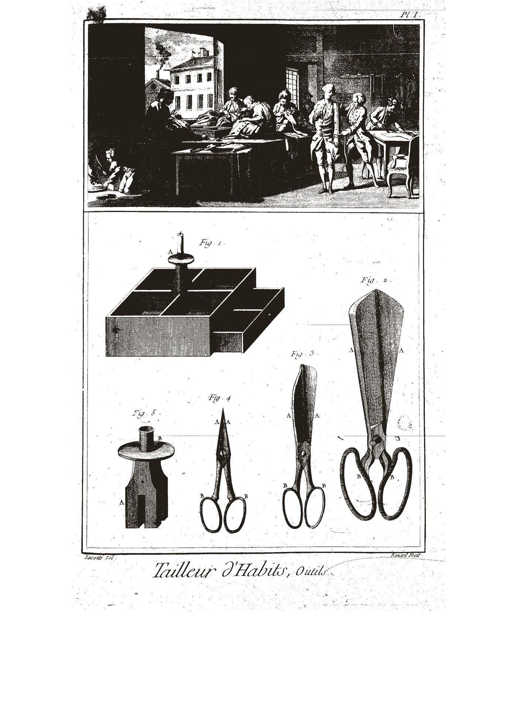
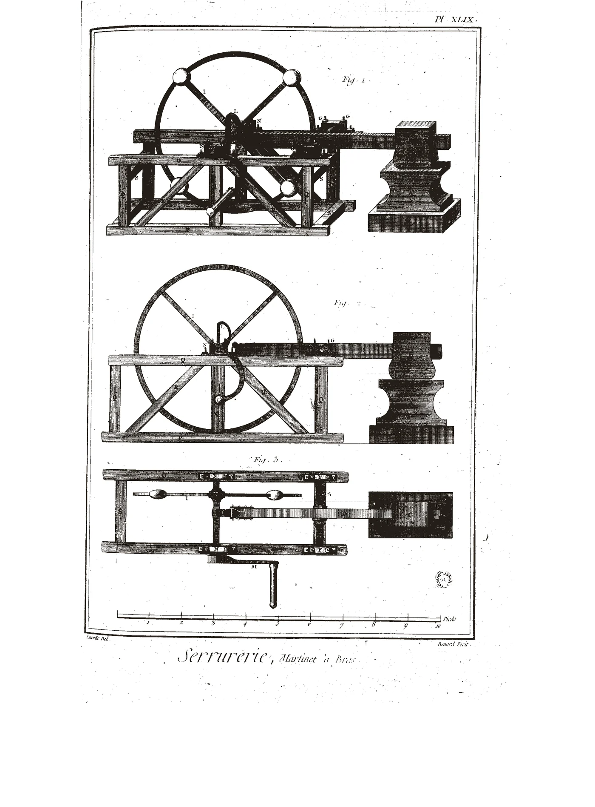
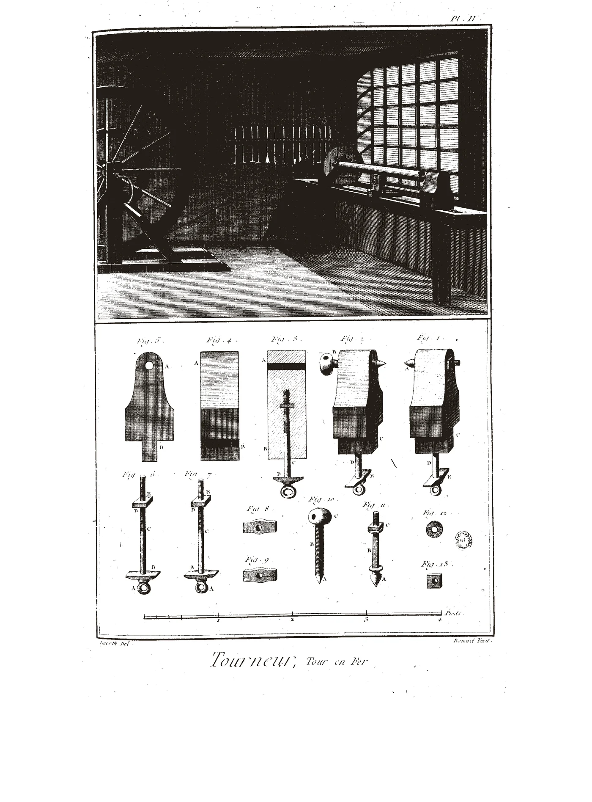
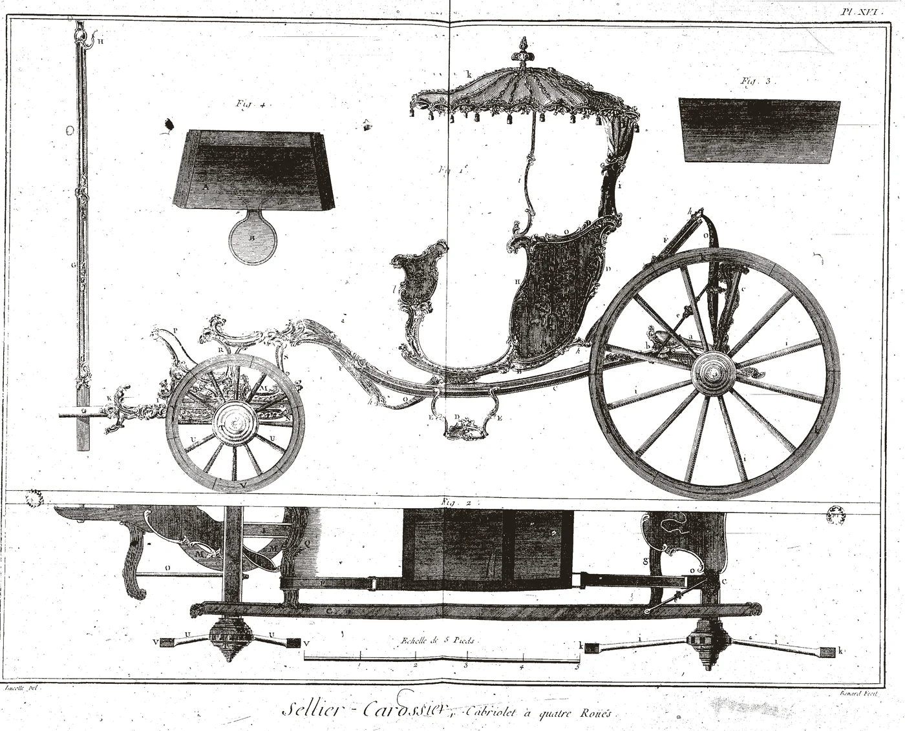

CutoutLathes and turning toolsavailablecut-lathe.webp

CutoutCasks, tubs and vesselsavailablecut-barrels.webp

CutoutSaws and framesavailablecut-frames.webp

CutoutA carriage and its partsavailablecut-carriage.webp

CutoutA martinet machineavailablecut-machine.webp

TextureCatalogue of hardware formsblog thumbnailsplate-pattern.webp

PlateTailoring workshop, full plateavailableplate-hero.webp

PlateOne machine, three stagesavailableplate-process.webp

PlateTurner's shop, full plateavailableplate-shop.webp

PlateCarriage in elevationavailableplate-wide.webp
Candidates
Raw plates from the Encyclopedie, not yet processed. Any of these can
become a wash or a cutout in a few minutes. Architecture and masonry first,
then the trades.
ArchitectureColumn order, drawn and dimensionedvolume 1-196
ArchitectureRusticated stone piers and basesvolume 1-199
ArchitectureWindow bays with entablaturevolume 1-202
ArchitectureSix window and door surroundsvolume 1-205
ArchitecturePublic fountain: elevation and planvolume 1-208
ArchitectureFirst-floor plan of a royal libraryvolume 1-211
ArchitectureElevation of the Bibliotheque Royalevolume 1-214
ArchitectureGround-floor plan of a large hotelvolume 1-217
ArchitecturePlan of a private housevolume 1-220
ArchitectureInterior elevation of a galleryvolume 1-223
ArchitectureInterior wall elevationsvolume 1-226
ArchitectureRoom plan, walls in solid blackvolume 1-229
ArchitectureStaircase in section and planvolume 1-232
Coupe des PierresStone-cutting setting-out, gothic archvolume 1-235
Coupe des PierresArch geometry, struck with linesvolume 1-238
ArchitectureMoving stone in a workshopvolume 1-241
MaconnerieBrick coursing and wall sectionsvolume 1-244
MaconnerieFoundation piers and a hoist wheelvolume 1-247
MaconnerieWell shafts and chimney sectionsvolume 1-250
MaconnerieMason tools and roof truss formsvolume 1-253
MaconnerieA plaster quarry, with tools belowvolume 1-256
ArchitectureVaults, arches and their sectionsvolume 1-259
MachineA large geared machine in perspectivevolume 1-064
MachineMachine in a masonry housingvolume 1-075
JardinageFormal garden parterre, in planvolume 1-086
LaboratoryA workshop interior with apparatusvolume 1-108
Sellier-CarossierA carriage, whole and in partsvolume 8-030
SerrurerieCatalogue of identical hardware formsvolume 8-072
SerrurerieOne machine drawn once per stagevolume 8-100
TabletierSaws and framesvolume 8-128
Tailleur d'HabitsA tailoring workshop and its toolsvolume 8-156
TanneurA tannery in elevationvolume 8-198
Machines de TheatreRoof truss and stage machineryvolume 9-114
TonnelierCasks, tubs and vesselsvolume 9-142
TourneurA turner's shop lit by one windowvolume 9-170